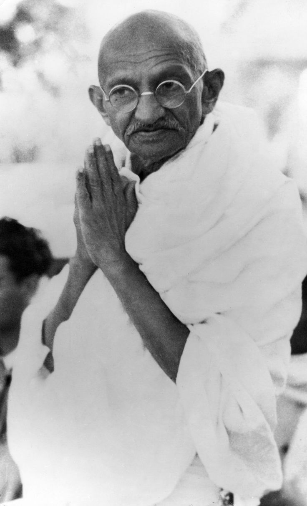

Mahatma Gandhi e la pace
Karamchand Gandhi (1869–1948), conosciuto come Mahatma (“grande anima”), è una delle figure più importanti del XX secolo per il suo contributo alla filosofia della pace e della nonviolenza. Leader del movimento per l’indipendenza dell’India dal dominio britannico, Gandhi ha dimostrato che il cambiamento politico e sociale può avvenire senza ricorrere alla violenza.
Il concetto di nonviolenza (Ahimsa)
Al centro del pensiero di Gandhi c’è il principio dell’ahimsa, termine sanscrito che significa “non nuocere”. Per Gandhi la nonviolenza non era solo l’assenza di violenza fisica, ma un atteggiamento profondo di rispetto verso ogni essere vivente. Essa richiedeva autocontrollo, compassione e la capacità di trasformare il conflitto senza distruggere l’avversario.
La Satyagraha: la forza della verità
Un altro pilastro del pensiero gandhiano è la satyagraha, che significa “insistenza sulla verità”. Questa strategia prevedeva la resistenza pacifica contro le ingiustizie, attraverso scioperi, boicottaggi, marce e disobbedienza civile. Secondo Gandhi, la verità e la giustizia possiedono una forza morale superiore a qualsiasi arma.
Gandhi e la pace come azione
Per Gandhi la pace non era una condizione passiva, ma un’azione concreta. Celebre è la sua idea che “non esiste una via per la pace, la pace è la via”. Questo significa che i mezzi utilizzati per raggiungere un obiettivo devono essere coerenti con il fine stesso: non si può costruire una società pacifica attraverso la violenza.
L’impatto del pensiero gandhiano nel mondo
Il messaggio di Gandhi ha influenzato numerosi leader e movimenti nel mondo, tra cui Martin Luther King Jr. nella lotta per i diritti civili negli Stati Uniti e Nelson Mandela nella battaglia contro l’apartheid in Sudafrica. La sua eredità dimostra che la pace può essere uno strumento potente di cambiamento globale.
